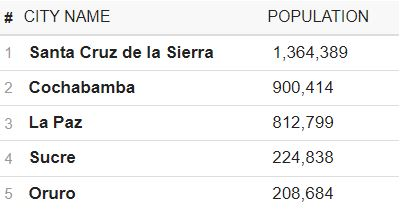
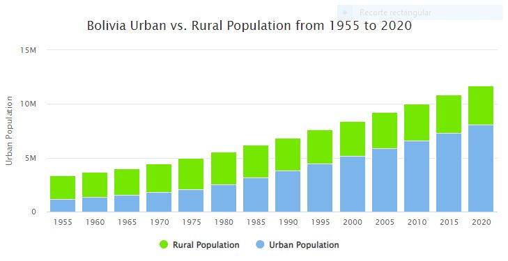

Population of Bolivia (2022)
The current population of the Plurinational State of Bolivia is 11,977,387 as of Thursday, June 2, 2022, based on Worldometer elaboration of the latest United Nations data.
Bolivia Population
11,673,021
Yearly Change
+ 1.39%
Global Share
0.15%
Global Rank
81
Population Density
The 2019 population density in Bolivia is 11 people per Km2 (28 people per mi2), calculated on a total land area of 1,083,300 Km2 (418,264 sq. miles).
Largest Cities in Bolivia
Life Expectancy in Bolivia
Both Sex
72.4 Years
(life expectancy at birth, both sexes combined)
Females
75.54 Years
(life expectancy at birth, females)
Males
69.5 Years
(life expectancy at birth, males)
Bolivia Urban Population
Currently, 69.0 % of the population of Bolivia is urban (7,940,041 people in 2019)
Image Gallery

Cyan Lake in the dessert of Uyuni
Beuatiful lake in Uyuni, Potosí

Pink lake, Uyuni
Picture of the Pink Lake

Llama
A llama in the field

Girl and Llama
Bolivian girl with baby Llama in Isla del sol

Salar de Uyuni
the floor is completely flooded creating a mirror